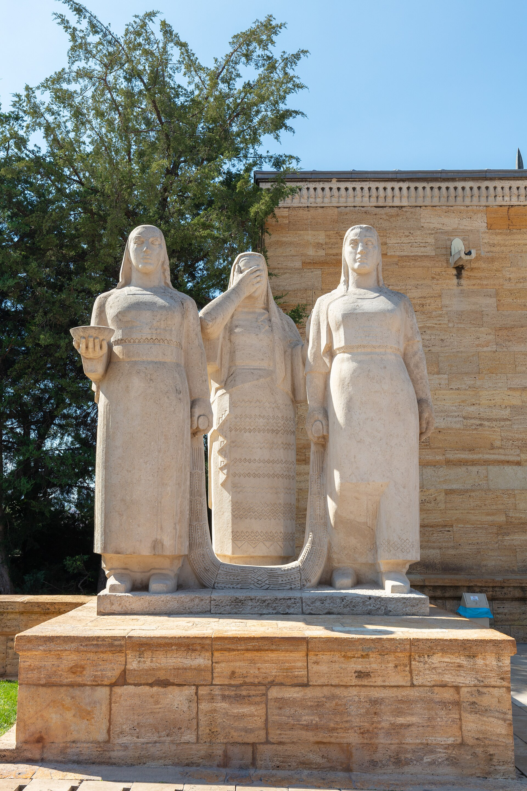

O'zbekiston va Turkiya munosabatlarining o'rnatilishi: birinchi tan olgan davlat (1991–1996)
Turkiya — O'zbekiston mustaqilligini dunyoda birinchi bo'lib tan olgan davlat. Ushbu tarixiy ma'lumotnoma 1991–1996-yillarda ikki davlat o'rtasidagi diplomatik, ta'lim va iqtisodiy aloqalarning o'rnatilishini aniq sanalar va faktlar bilan bayon etadi.

O'zbekiston 1991-yil 31-avgustda davlat mustaqilligini e'lon qilgach, uning suverenitetini xalqaro miqyosda tan olish jarayoni boshlandi. Bu borada Turkiya alohida o'rin tutadi: u O'zbekiston mustaqilligini dunyoda birinchi bo'lib — 1991-yil 16-dekabrda tan oldi. (Manba: Turkiya Tashqi ishlar vazirligi — Türkiye–O'zbekiston munosabatlari.)
Diplomatik aloqalarning o'rnatilishi
O'zbekiston Prezidenti Islom Karimov 1991-yil dekabrida Turkiyaga tashrif buyurdi — bu yangi mustaqil turkiy davlatlar bilan yaqinlashuvga ishora bo'ldi. Rasmiy diplomatik aloqalar 1992-yil 4-martda o'rnatildi; Turkiya Toshkentda elchixona ochgan dastlabki davlatlardan biri bo'ldi, O'zbekiston esa Anqarada o'z elchixonasini ochdi. (Manba: Turkiya Tashqi ishlar vazirligi.)
Turkiy dunyoga yo'nalish va ilk sammit
SSSR parchalangach, Turkiya (avval Prezident Turgut O'zal, so'ng Sulaymon Demirel davrida) yangi mustaqil turkiy respublikalar bilan til va madaniy yaqinlikka asoslangan hamkorlikni faol rivojlantirdi. Shu doirada 1992-yil 30–31-oktabrda Anqarada Turkiyzabon davlatlarning birinchi sammiti o'tkazildi; unda Turkiya, Ozarbayjon, Qozog'iston, O'zbekiston, Qirg'iziston va Turkmaniston rahbarlari ishtirok etdi. (Manba: Organization of Turkic States — Presidential Summits.)

Ta'lim va madaniy aloqalar
Ikki tomonlama aloqalarning muhim yo'nalishi — ta'lim bo'ldi. Turkiya «Katta talaba loyihasi» (Büyük Öğrenci Projesi, 1992) doirasida O'zbekiston talabalari uchun har yili taxminan ikki ming stipendiya taklif qildi; minglab o'zbekistonlik yoshlar Turkiya universitetlarida o'qish imkoniyatiga ega bo'ldi. Shuningdek, 1992-yilda tashkil etilgan Turkiya hamkorlik va muvofiqlashtirish agentligi (TİKA) mintaqada ta'lim, madaniyat va rivojlanish loyihalarini yo'lga qo'ydi. (Manba: Turkiya Tashqi ishlar vazirligi; Wikipedia — Turkey–Uzbekistan relations.)
Iqtisodiy va transport aloqalari
1990-yillar boshida turkiy kompaniyalar O'zbekistondagi dastlabki chet el investorlari qatoriga kirdi — ayniqsa qurilish va to'qimachilik sohalarida. Anqara va Istanbul bilan to'g'ridan-to'g'ri aviaqatnovlar yo'lga qo'yildi, bu esa savdo va insoniy aloqalarni kengaytirdi. (Manba: Wikipedia — Turkey–Uzbekistan relations.)
«Abadiy do'stlik» shartnomasi (1996)
Dastlabki yillardagi yaqinlashuv cho'qqisi — 1996-yil 8-mayda imzolangan O'zbekiston va Turkiya o'rtasidagi Abadiy do'stlik va hamkorlik shartnomasi bo'ldi. U ikki davlat munosabatlariga rasmiy va uzoq muddatli huquqiy asos yaratdi. (Manba: Turkiya Tashqi ishlar vazirligi.)
Keyingi davr
1990-yillar oxirida ikki davlat munosabatlarida sovuqlik yuzaga keldi va bir muncha vaqt sust bo'lib qoldi. Munosabatlar keyinroq, ayniqsa 2016-yildan so'ng qayta jadallashdi; biroq 1991–1996-yillarda qo'yilgan poydevor — birinchi tan olinish, diplomatik aloqalar, ta'lim dasturlari va Abadiy do'stlik shartnomasi — ikki xalq aloqalarining boshlang'ich asosi bo'lib qoldi. (Manba: Wikipedia — Turkey–Uzbekistan relations.)
Xulosa
Turkiya O'zbekiston mustaqilligini birinchi bo'lib tan olgan (1991-yil 16-dekabr) va u bilan erta diplomatik aloqa o'rnatgan davlat sifatida mamlakatning xalqaro maydonga chiqishida muhim rol o'ynadi. 1992-yildagi diplomatik aloqalar va turkiy sammit, ta'lim dasturlari hamda 1996-yilgi Abadiy do'stlik shartnomasi bu dastlabki davrning asosiy belgilaridir.